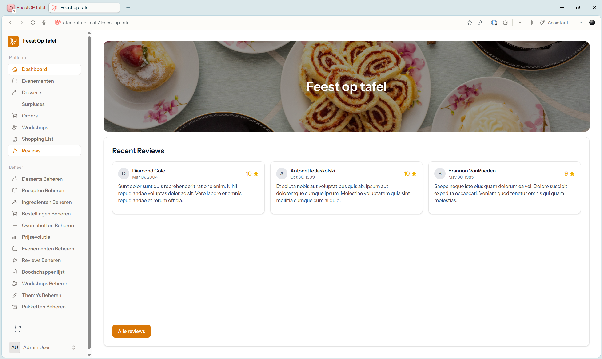
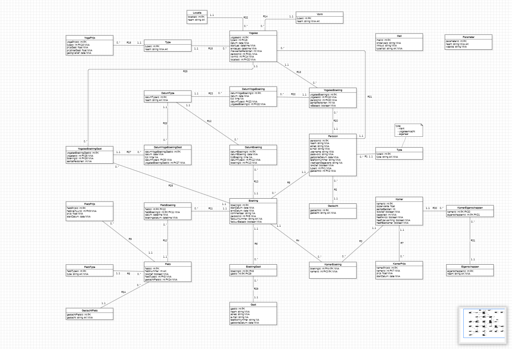
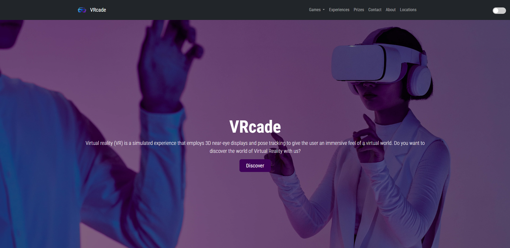
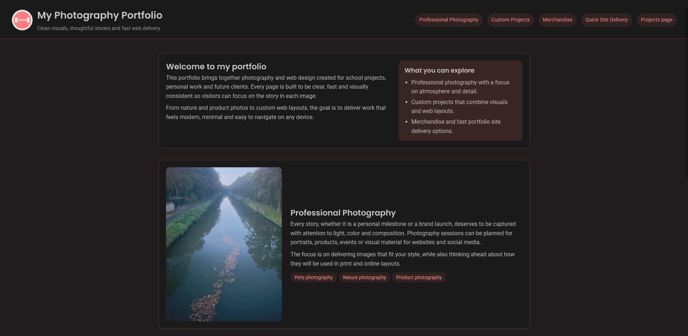

Feest Op Tafel Dashboard
Een uitgebreid management dashboard voor evenementen, desserts, bestellingen en workshops. Gebouwd met moderne web technologieën voor een efficiënte beheerervaring.

Een uitgebreid management dashboard voor evenementen, desserts, bestellingen en workshops. Gebouwd met moderne web technologieën voor een efficiënte beheerervaring.

Een complexe databasestructuur (ERD) voor een uitgebreid boekingssysteem, inclusief modules voor yoga, fietsverhuur, kamers en gebruikersbeheer.

Een strakke, dark-theme landing page voor een Virtual Reality arcade. Ontworpen om een meeslepende eerste indruk te maken met een moderne UI/UX.

Een minimalistische, moderne portfolio website speciaal ontworpen voor professionele fotografie, met focus op visuele storytelling en een strak design.